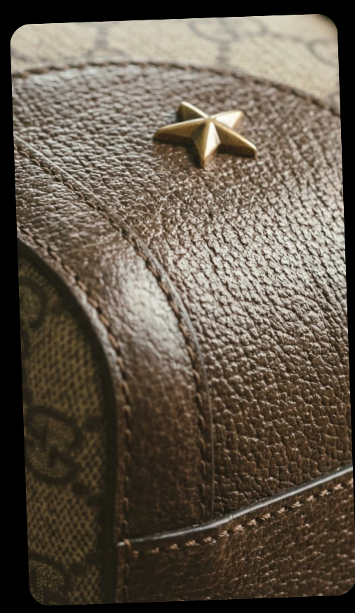
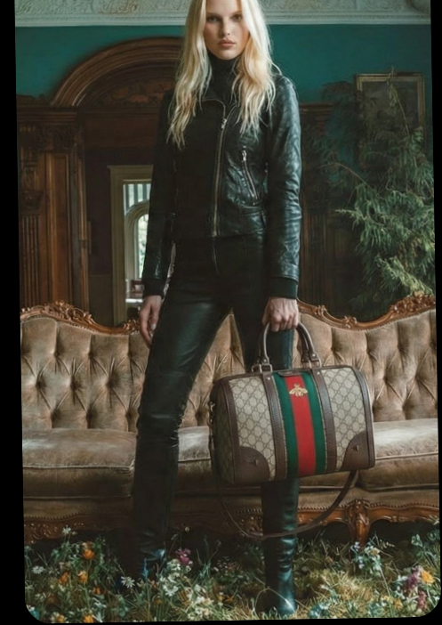
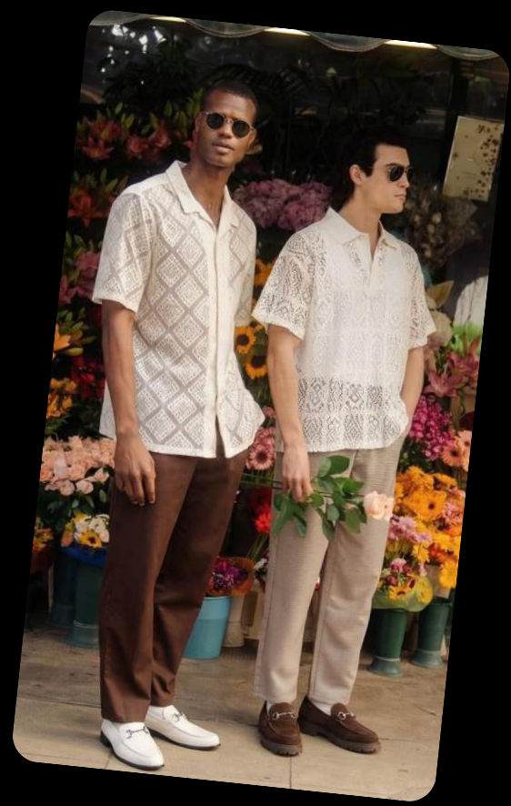
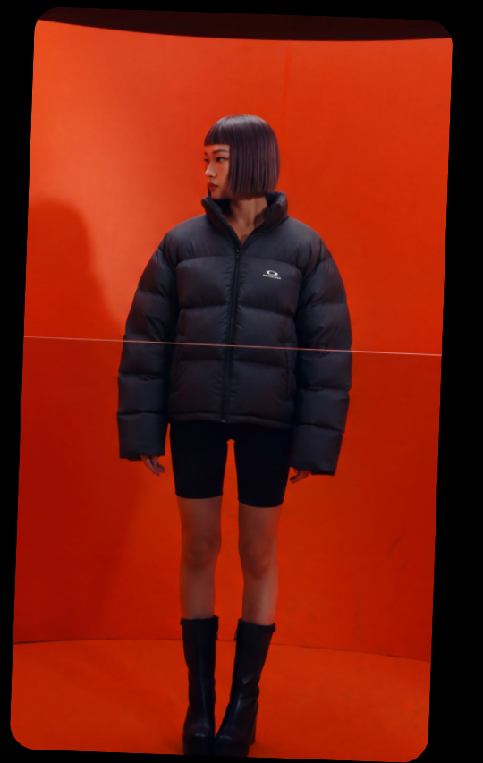
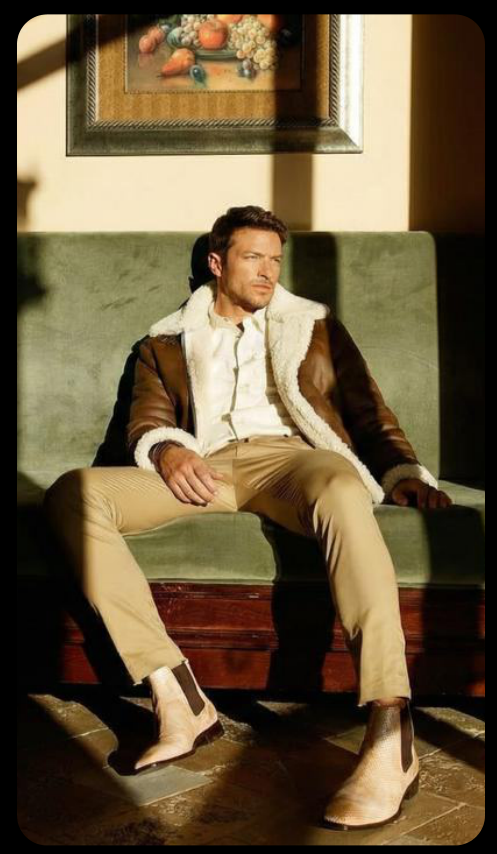
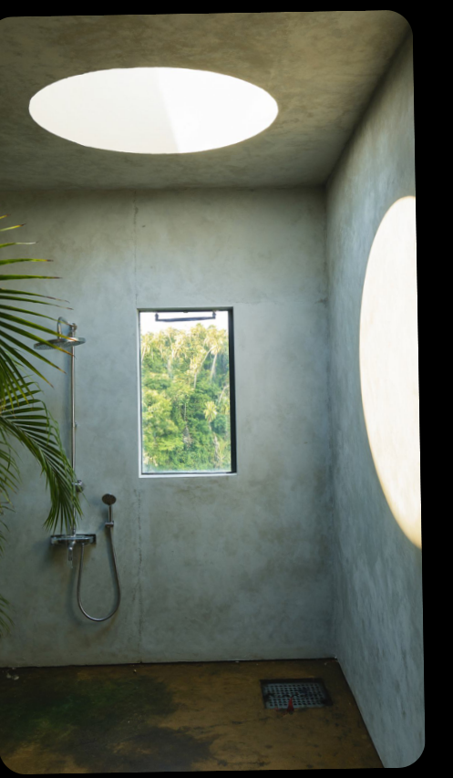

An AI-powered ad agency built to perform. Performance creative, AI influencers, and media buying, engineered end-to-end.






Pick a single pillar or plug into the whole system. Humans and machines, always working together.
A real human reviews every request — we reply within one business day.